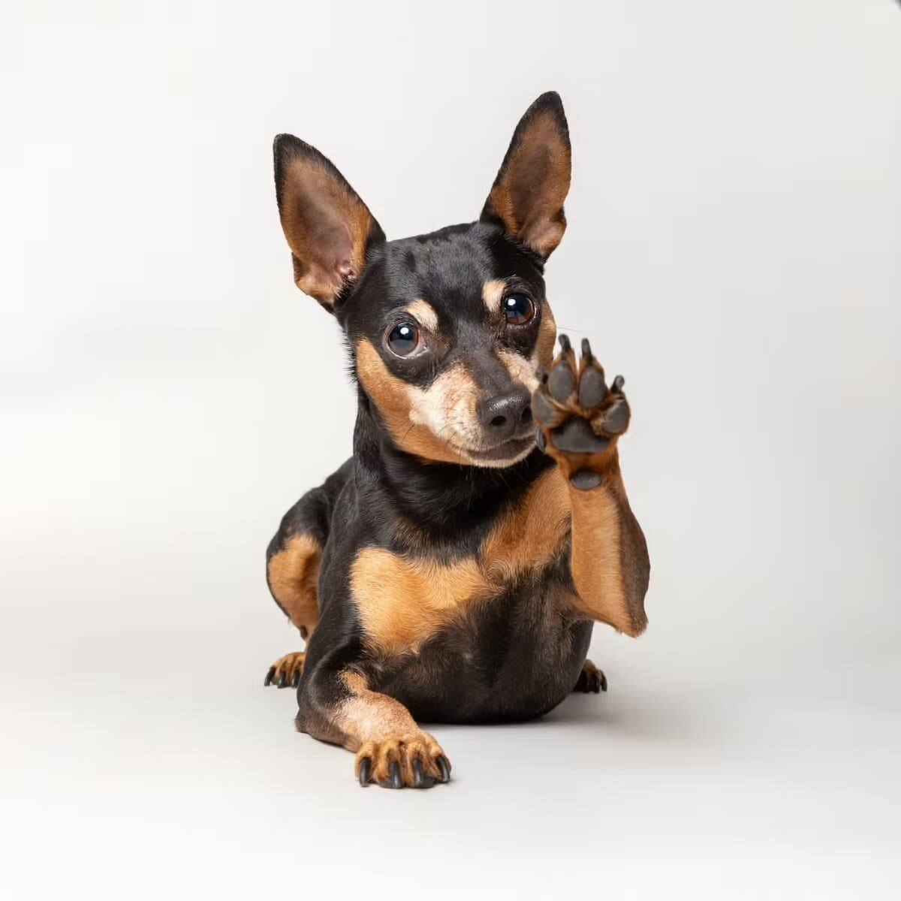

Clicker Training 101: A Beginner's Guide

Here's a timing problem you've probably run into without knowing it: the exact instant your dog does the right thing usually passes before you can even get "good boy!" out of your mouth. A clicker solves that — one short, identical sound, every single time, marking the exact moment that counts.
Step 1: "Charge" the clicker
Before using the clicker for any actual training, you need to build the association between the click and a reward. Click, then immediately give a treat — repeat this 10-15 times in a short session, with no expectation of any specific behavior yet. Your dog should start to visibly react to the click itself (ears perking, looking for the treat) before moving on; that reaction is the sign the clicker now means something.
Step 2: Mark and reward actual behavior
Once charged, click the exact instant your dog does something you want to reinforce — even something as simple as glancing at you, or a natural sit. Follow every click with a treat, without exception, at least while you're building a new behavior. The click marks the behavior; the treat is what makes the marker meaningful.
Step 3: Add a verbal cue
Once a dog is reliably offering a behavior (say, sitting) in anticipation of a click, start saying the cue word right before they do it, then click and reward as usual. After enough repetitions, the word itself starts predicting the behavior, and you can begin asking for it on cue rather than waiting for your dog to offer it.
Why precision matters more than it seems
Imprecise timing is one of the most common reasons ordinary training stalls — reward delivered even half a second late can accidentally mark the wrong thing (a dog that already stood back up from a sit, for example, rather than the sit itself). A clicker removes most of that timing error, which is why many trainers find it speeds up learning meaningfully compared to voice marking alone.
Phasing out the clicker
Once a behavior is reliable on a verbal cue, the clicker becomes less necessary for that specific behavior — most trainers move to intermittent, then eventually just occasional, reinforcement rather than clicking and treating every single repetition forever. The clicker's real value is in teaching new behaviors precisely, not as a permanent requirement for a dog to perform them.
Getting started
Any basic clicker works — there's little functional difference between brands. Pairing it with our basic obedience commands guide gives you a concrete first set of behaviors to apply this method to.